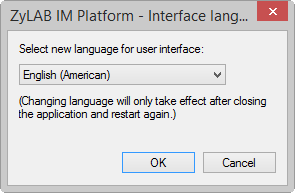
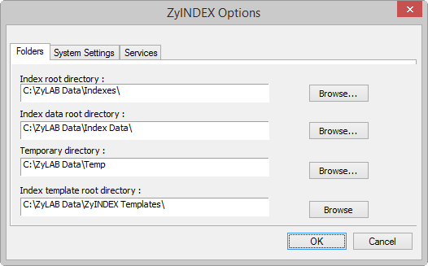
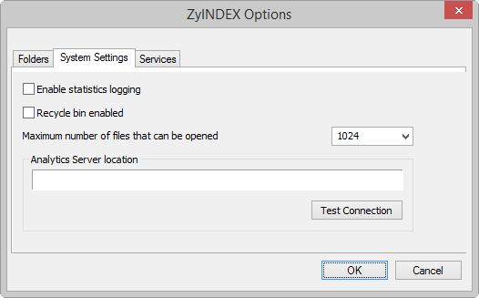
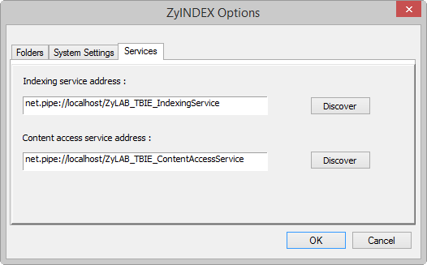
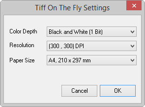
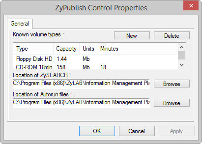

- First, select
-
Then, go to Options > Web Client.

The ZyINDEX Options contain the general settings for the various functions in ZyINDEX. Many of the options are not activated until you select its related feature button in the ZyINDEX user interface.
Go to Options > Interface Languages...

The Interface Languages selector lets you select a new language for the user interfaces in the ZyLAB Information Management Platform programs. You have to restart to see the new language, and the language is applied to all programs in the ZyLAB Information Management Platform.
Go to Options > Global Settings...
Global Settings has the following options:
Go to Options > Global Settings...
The Folders tab lets you specify the paths to the various folders ZyINDEX uses to store index and processing data.

Go to Options > Global Settings...
The System Settings tab lets you set the following:

Go to Options > Global Settings...
The Services tab lets you set the default addresses for TBIE indexes:
Normally they are hosted on localhost, but they can be hosted on another machine too.

Go to Options > Tiff Conversion Settings
The 'TIFF On The Fly Settings' are used for the TIFF Conversion feature in ZyView. The settings used will depend on the quality of the original file, and the quality you want the output TIFF to be. Colour settings and a high resolution will give the best quality but will also give the largest TIFF file, which can cause indexing and finding to be slower. Use settings that give a usable TIFF output.

First, select Publish Then, go to Options > Publish.
The ZyPublish Control Properties options let you add new drive types and capacities to the Volume type list. The Location of ZySEARCH and the Location of Autorun files are also specified here.

The general options are applied to all web clients you will make. Configure these options before you create a web client.
The options are as follows:
For Microsoft Internet Information Servers this is default C:\inetpub\wwwroot
Choose a temporary folder that every user of this computer has full-control access rights for.
This index will be in every web client you create. An entry here is not mandatory; you can choose indexes to include when you create the web client.
Define a HTML editor, for example Notepad.exe.
Define the internet explorer you want to use to open your web client. By default, Microsoft Internet Explorer is installed in C:\Program Files\Internet Explorer\iexplore.exe.
Define the URL of your website (for example 'www.zylab.com' or a TCP/IP number such as '193.67.146.1').
To add security, click the 'Change' button and define how the ZyLAB Web Client should be run:
Treat these user agents as search engines
If you want to make your web client accessible to user agents (for example a web browser or search engine crawler), select the checkbox 'Treat these user agents as search engines', and click the Change button.
For more information, see Internet Search Engine Integration.
Click OK to save the changes. In the next dialog click Yes to confirm the changes.
Go to Start > Run. The Run dialog box appears, with the Command Line text box active.
Type this information into the box to start ZyINDEX:
Path to the shareable files,
e.g.
“d:\Program Files\ZyLAB\Information Management Platform\Bin\”
Executable program file, e.g.
ZyINDEX.EXE
For the commandline options described below it is essential to follow the following format rules:
The dialog box gives you the option of running the program minimized, a convenient way to use ZyINDEX while you work with ZyFIND or some other Windows® program.
In ZyINDEX, the command line can be used to build, update and optimize indexes.
Command line option to build an index
use -b to begin a ZyINDEX session in a full-size window
or
use -b0 to begin a ZyINDEX session iconized, which closes upon completion if no error occurs
use -i to select an index
Command line option to update an index
use -u for Update!
or
use -u0 to Update! iconized
Command line option to optimize an index
use -o to Optimize!
or
use -o0 to Optimize! iconized.
You can also use the parameter -StartTimer, this option will start ZyINDEX with TIMER running. This may be part of your Windows start menu if you have a dedicated machine running ZyINDEX.
The parameters, -b, -u, and -o are mutually exclusive. ZyINDEX responds to the first one in the command, and ignores any others, if present.
In ZyINDEX, indexes can be created, erased and deleted from the command line.
Command line option to create a new index
ZyINDEX.exe -c
-name[short index name, long index name]
-n[noise word list]
-com[commandfile name]
-s[settings file] ...for create
Command line option to delete index
ZyINDEX.exe -d
-name[short index name] ...for delete
Command line option to erase an index
ZyINDEX.exe -e
-i[<short index name>] ...for erase
For example: "C:\Program Files\ZyLAB\Information Management Platform\Bin\ZyINDEX.exe" -e -i[<archivexx>]
There are no warnings on delete and erase!
In ZyINDEX, webclients can be created and deleted from the command line.
Command line option to create a new web client
-CreateClient[arguments]
arguments
All arguments are obligatory
1. Client's long name
2. Client's short name (http alias)
3. Client's root directory
4. Client's email address
5. Client's language
6. Client's index path
If any white space occurs within one of these arguments, the argument has to be quoted. For example:
-CreateClient["Test Client", "Test", "C:\inetpub\wwwroot\Test" ,"webmaster@zylab.nl" , "English", "C:\ZyLAB Data\Indexes\Test"]
Command line option to delete a new web client
-DeleteClient[<client’s short name(http alias)>]
In ZyINDEX, indexes can be added to TIMER.
Command line option to add an index to TIMER
-x[<shortindexname>;"<indexpath>";<datetime>;1;1;1;0;0]
Command line option to remove an index from TIMER
-y[<shortindexname>]